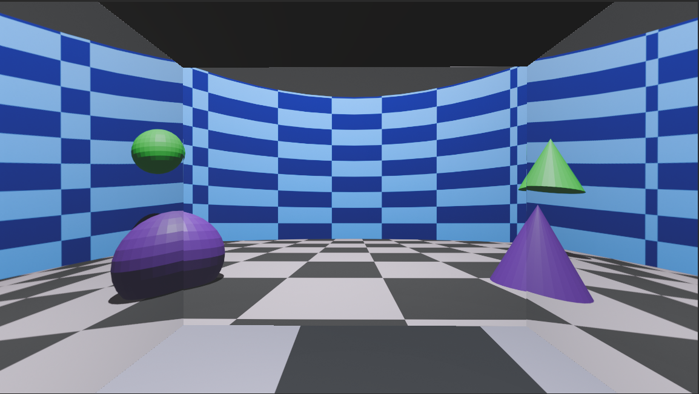
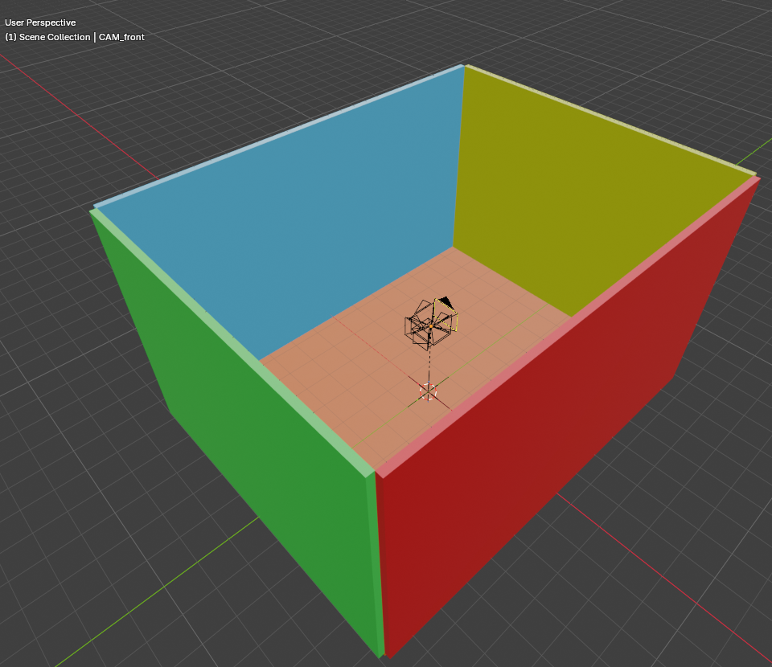
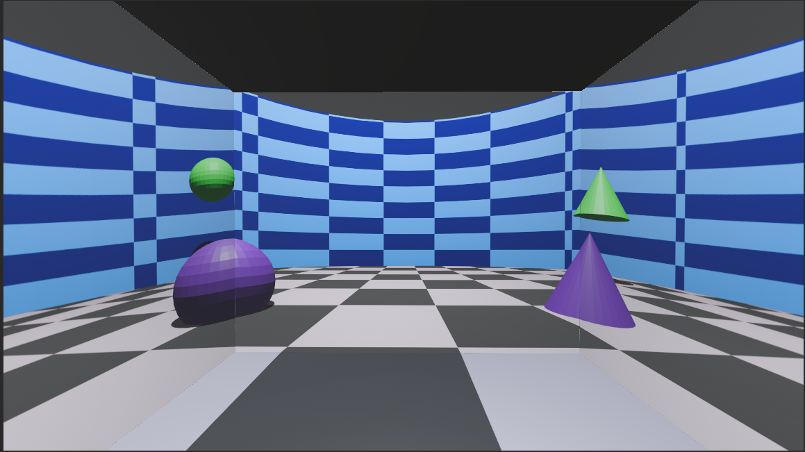

Het probleem
De muren van de immersive lab hebben geen consistente proporties. De voor en achtermuur zijn net niet vierkant. De linker en zij muur zijn rechthoekig en de vloer is ook een rechthoek maar minder breed dan de linker en rechter muur.
Voor elke muur is er 1 camera nodig. Met dus uiteindelijk 3 verschillende instellingen, die alsnog exact op elkaar moeten aansluiten. Ik weet exact niks van camera's.

Belangrijke settings
Er zijn 2 belangrijke settings voor de cameras: FOV en de resolutie.
De resolutie is hoe groot de beelden zijn:
Een standaard monitor heeft een resolutie van 1920x1080 pixels. Dat is hoe breed en hoog het beeld is. In Blender kan je ook de resolutie instellen van de camera's. Er zijn 3 verschillende resoluties, en die worden gedicteerd door de immersive room zelf:
- Voor en achtermuur: 1058 x 799 pixels
- Linker en rechtermuur: 1358 x 799 pixels
- Vloer: 1358 x 1058 pixels
De FOV is hoeveel je kan zien binnen die pixels: FOV staat voor "Field of View", het betekent letterlijk hoeveel je horizontaal of verticaal kan zien.
Het probleem met Blender is, als je settings van de camera instelt, en dan de resolutie verandert, dan verandert het hele beeld. Dus alles kan de juiste settings hebben en tegelijkertijd totaal niet aansluiten.
Originele camera setup
Als we mijn originele camera's gebruiken in de testkamer dan is dit het resultaat:

Experimenteren met camera setup
Na 5 pogingen met de settings ben ik hierop uitgekomen.

Dit is close, maar nog niet goed eigenlijk.
Suspend all logic
Ik had al meerdere dingen uitgeprobeerd en was uren bezig. Ik had met AI gekeken of ik de settings goedkreeg en niks werkte. Het beste resultaat wat ik behaalde was poging 5.
Ik had een pauze genomen en kwam toen op een idee. Wat als ik geen logica toepas maar gewoon de cameras blijf schalen tot ze perfect aansluiten op de muren van de immersive room...?

Dit zijn de muren van de immersive room nagemaakt in Blender. Het zwarte gedeelte erbinnen zijn de cameras. Ik heb ze geselecteerd en letterlijk gewoon de settings aangepast tot elke muur perfect in beeld kwam.

Dit is goed genoeg voor de immersive room. Niet meer aanraken!